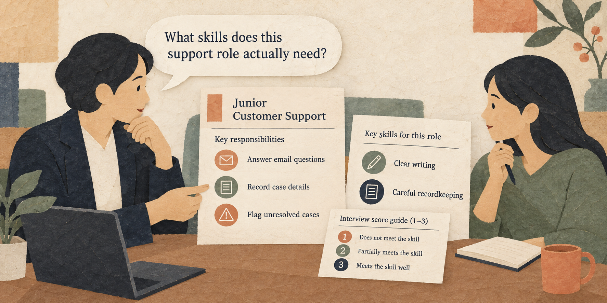

Situation
The problem
A vague job ad can deter qualified applicants and leave interviewers evaluating personality rather than the work the role requires.

3 hours: 50-minute lesson, 10-minute break, 50-minute guided practice, 10-minute break, 50-minute applied practice, and 10-minute wrap-up.
A vague job ad can deter qualified applicants and leave interviewers evaluating personality rather than the work the role requires.
Turn real duties into clear job requirements and consistent, job-related interview questions.
Practice material: Use the practice material supplied in the session Markdown.
Do not replace missing information with guesses.
A vague job ad can deter qualified applicants and leave interviewers evaluating personality rather than the work the role requires.
Work through the explanation before comparing prompts or starting the exercise.
Work through the explanation before comparing prompts or starting the exercise.
These examples come from the current session scenario.
Write an exciting ad for a superstar who can do everything.
Find someone young, energetic, and a perfect culture fit.
Keep the source, task, constraints, and output check visible.
Use only the duties and requirements below. Draft a concise junior job ad with three duties and three observable skills. Do not add degree, experience, age, or personality requirements.
Write one structured interview question about handling an unresolved customer email. Give a 1-3 guide: 1 = no clear steps; 2 = describes a reasonable response; 3 = explains response, accurate case notes, and when to escalate. Apply the same guide to every candidate.
Use the complete case and instructions from the session Markdown.
Use the complete case and instructions from the session Markdown.
Check the output before sharing or acting on it.